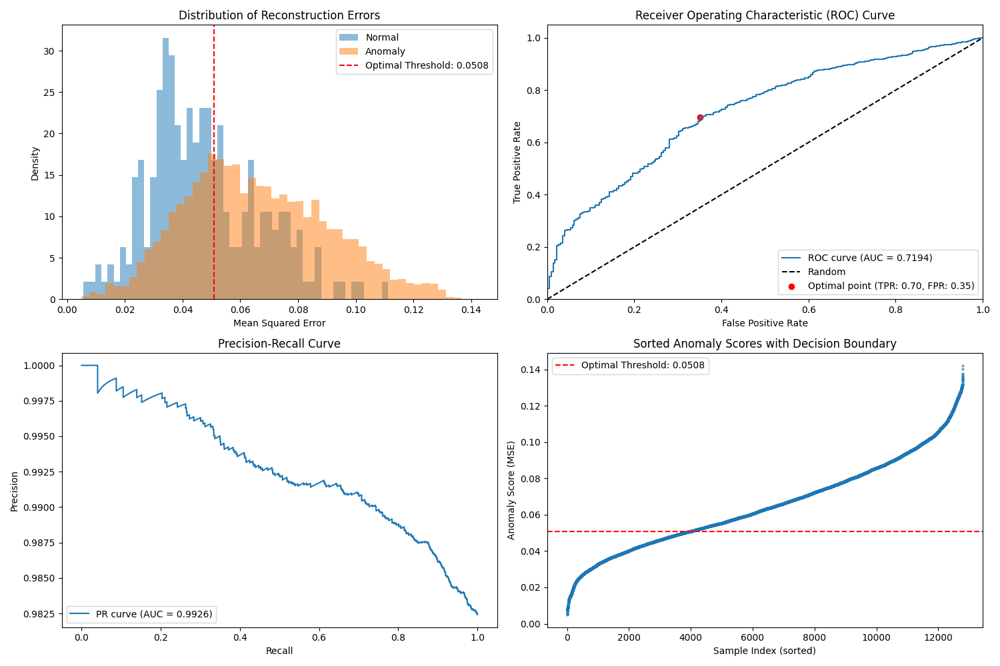

Model Training
Training performance metrics and learning curves for the autoencoder model.
Threshold Analysis
Analysis of anomaly detection thresholds showing error distributions and ROC curves.

Detection Results
Results of traffic sign detection and anomaly classification.
Anomaly Samples
Examples of detected normal and anomalous traffic signs.